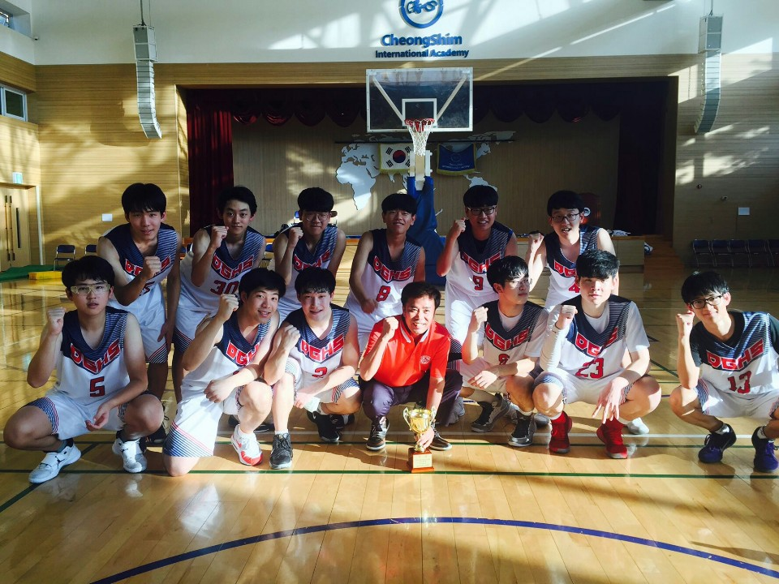

2008~2013까지 피아노 학원에서 피아노를 배웠는데 그 때 당시에는 피아노가 그렇게 싫었던 것 같다.
집에 있는 피아노는 거들떠 보지도 않고 중학교에 올라가서 점점 멀어졌다.
그러다가 인터넷 방송에서 모든 곡을 듣고 치는 사람을 보고 감명을 받고 그렇게 되고 싶어서 그냥 무작정 피아노 앞에 앉았다.
그렇게 2015년부터 지금까지도 계속 피아노를 치고 있고 이제는 없어서는 안될 소중한 취미이다.
추가로 기타는 독학으로 1년도 되지 않았으며 노래는 고등학교 때 보컬부에서 활동을 했었다.
Game
아주 어릴 떄부터 휴대폰, 컴퓨터 게임을 하였고 단순히 게임만 한게 아니라 그 게임을 하면서 쌓은 추억들이 아주 많다.
현재는 컴퓨터 게임을 주로 하고 있지만 휴대폰 게임도 관심이 많다.
하지만 최근 휴대폰 게임 시장이 대부분 양산형 게임만 넘쳐나는 것 같아서 옛날 그 감성을 느낄 수 없다.
옛날 감성은 돈이 되지 않으니 게임 회사들의 심정도 이해가 가지만 한 명의 플레이어로서 아쉬울 따름이다.
Sport

원래는 아주 움직이는 것을 싫어하고 운동은 싫어하는 사람이었다.
초등학교때까진 엄청 뚱뚱했는데 중학교가면서 살이 빠지고 친구의 권유로 농구를 시작하게 됐다.
중학교 2학년 때부터 농구를 시작해서 고등학교 때는 농구부에 들어가서 대회를 나가기도 했다.
최근에는 운동을 너무 좋아해서 너무 많이 했나 생각 중이다. 발도 피로 골절로 농구를 하다가 부서지고 허리도 안좋았다가 결국 삐끗했다.
근데도 운동은 포기 못할 것 같다. 음악과 같이 내가 제일 좋아하는 취미이다.
좋아하는 운동으로는 축구, 농구, 플로어볼, 얼티미트 정도가 있다.